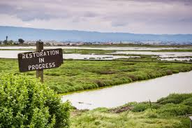
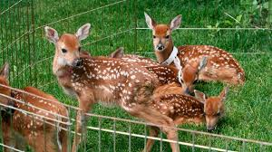
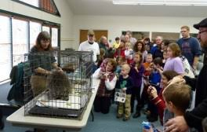

Our Latest Projects
Restoring Wetlands Habitat

Our team successfully restored over 50 acres of wetlands, creating a safe haven for migratory birds, amphibians, and native fish species. The project involved removing invasive plants and reintroducing native vegetation to restore balance to the ecosystem.
Wildlife Rehabilitation Center

We recently opened a new wildlife rehabilitation center, equipped with state-of-the-art facilities to care for injured animals. The center has already helped over 100 animals, including owls, foxes, and turtles, return to the wild.
Community Education Program

To spread awareness, we launched a community education program, teaching local residents about conservation efforts. The program has reached 2,000 participants through workshops, field trips, and interactive sessions about wildlife protection.